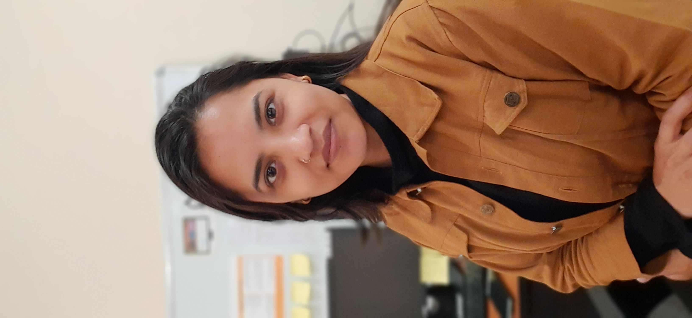

PhD in Computational Pathology
Every patient is now a ‘big data’ challenge. Being in research I always feel very responsible and excited to spend my all-time and energy only on the work I have chosen which is microscopy image analysis and machine learning as a part of my Ph.D. research project.
As per the reports from the Indian Council of Medical Research (ICMR), the death of around 1300 Indians every day is because of cancer. Cancer of the breast, lungs, stomach, and oral comes under the leading cause of cancer-related deaths in India.
Therefore, only machines could help to lower human suffering by giving an early and accurate diagnosis. The main aim of my research project is to bring computers to life and make them assist pathologists in disease diagnosis.
Explore my latest research and projects in computational pathology.
View ProjectsPhD Thesis Submitted: PhD thesis submitted on 9 September on "Artificial intelligence based oral cancer diagnosis and prognosis using digital pathology images".
First Publication: "High-resolution AI image dataset for diagnosing oral submucous fibrosis and squamous cell carcinoma" published in Scientific Data Nature journal on 27 September 2024.
Patent Granted: A patent has been granted on “System and method for Genomic Markers and Digital Pathology Image-Based Prediction of Oral Malignant Disorder” by the Government of India on 24 December 2024.
Download my latest resume below:
Download ResumeEmail: nisha152810@st.jmi.ac.in
LinkedIn: linkedin.com/in/nisha-chaudhary-33b6a425b
GitHub: github.com/NishaChaudhary23
Twitter (X): x.com/Nisha9293